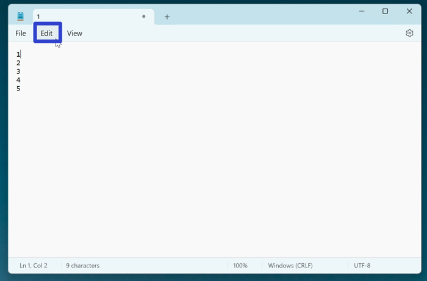
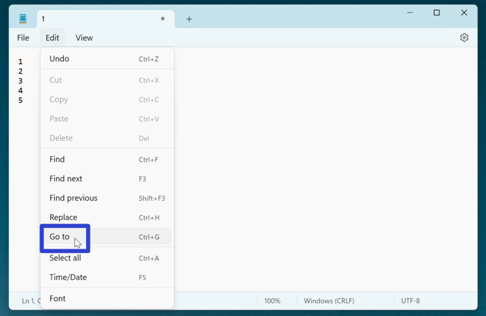
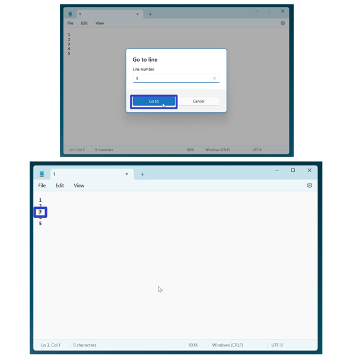
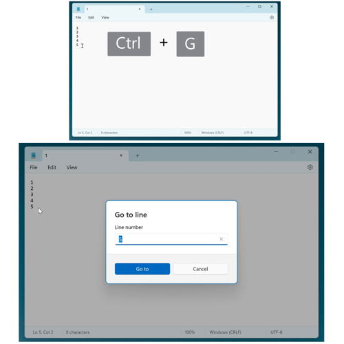
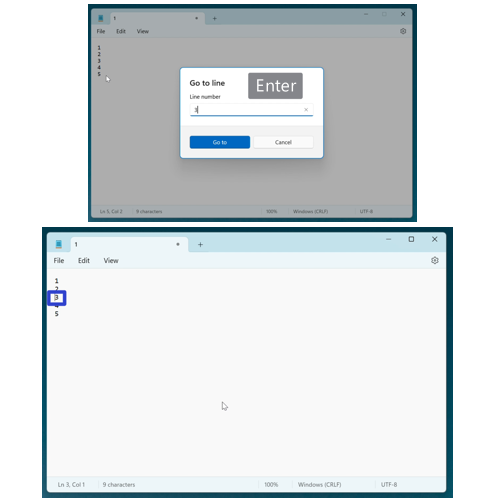
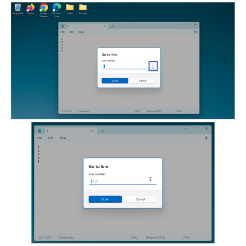
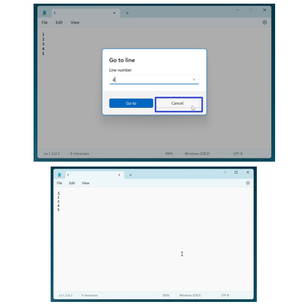
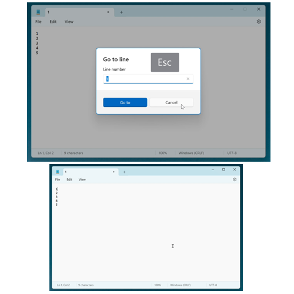

How to Navigate the Microsoft Notepad App (Windows 11)
This tutorial covers:
How to Use “Go To”:
How to Clear the “Go To” Window
How to Exit the “Go To” Window:
No time to scroll down? Click through this presentation tutorial:
Watch a tutorial video:
How to Use "Go To" With Menu
- Step 1: First edit a Notepad file. In the upper left click the “Edit” button. 
- Step 2: In the menu that opens, click “Go to”. 
- Step 3: In the Go to window that opens, type a line number and click the “Go to” button. The insertion point, or blinking vertical line, jumps to the corresponding line number in the Notepad window. 
How to Use "Go To" With Keyboard Shortcut
- Step 1: Edit a Notepad file. On the keyboard press Ctrl + G. 
- Step 2: In the “Go to” window that opens, type a line number and press Enter. The insertion point, or blinking vertical line, jumps to the corresponding line number in the Notepad window. 
How to Clear the "Go To" Window
- Step 1: First open the “Go to” window. On the far right side of the search bar, click the “X” button. The search bar clears as the search term disappears. 
How to Exit the "Go To" Window With Click
- Step 1: Open the “Go to” window. Click the “Cancel” button. 
How to Use Exit the "Go To" Window With Keyboard
- Step 1: First open the “Go to” window. On the keyboard press Esc. 
Refer to these instructions later with this free tutorial PDF.